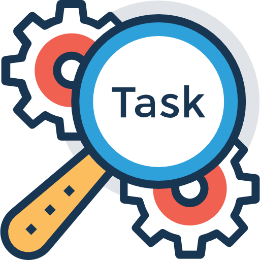
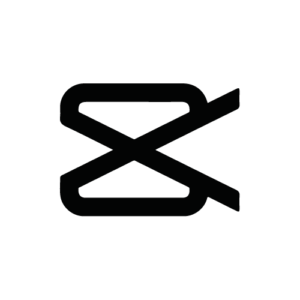
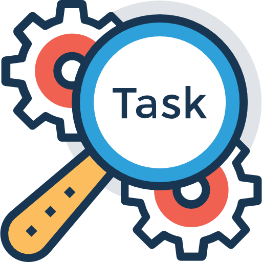
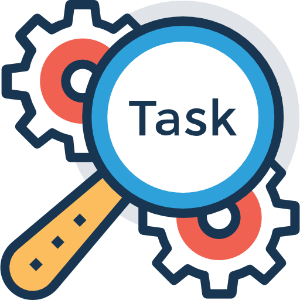

Our team relied heavily on real-time communication tools to collaborate effectively.
In addition to the methods below, we also conducted short daily stand-ups to quickly
align on tasks, discuss blockers, and celebrate small wins.
Telegram: Instant messaging for troubleshooting and brainstorming.
Zoom Meetings: Weekly virtual meetups to delegate tasks and schedule updates.
Shared Task Tools: Coordinated schedules and lists to manage time efficiently.

Group Coding and Development
From collaborative to individual coding sessions, we followed these steps:
Visual Studio Live Share: Real-time code collaboration with group coding sessions.
GitHub Repositories: Started with basic HTML code writing and version control.
GitHub Pages: Real-time previews of updates and site layouts.
Hands-On Development: Focused coding sessions to refine web pages and interfaces.
We also established clear guidelines for merging pull requests, performing code reviews,
and tracking each commit carefully. This ensured that every team member’s contributions
were checked for quality and consistency before integrating.
Apps for Web Development
We utilized various apps to enhance our platform's design and functionality:
Stack Overflow Error Compiler
Assisted in identifying and resolving code issues, speeding up the development process.
Adobe Photoshop
Used to create and edit visual elements, ensuring professional-quality designs for the platform.
ChatGPT AI
Helped generate dynamic and engaging content, enhancing user experience and reducing workload.

CapCut
Crafted professional and engaging promotional videos for our platform.
HeyGen
An AI-powered tool that generates realistic text-to-speech and video content, simplifying multimedia creation.
YouTube
Served as the platform for hosting and sharing our instructional videos.
Research and Accuracy
Our platform's foundation is rooted in thorough research:
Team members mastered and earned certifications offered on the platform.
Collaborated with subject matter experts to ensure accuracy.
Referenced industry-standard resources to provide up-to-date content.
Each certification path was carefully reviewed and tested by multiple stakeholders
before being published, ensuring the highest level of reliability and correctness.
Advanced Brainstorming & Mind-Mapping
Collaboration flourishes when ideas can be freely expressed and visually organized.
Below are some techniques and tools our team employs to spark creativity and solution-oriented thinking:
Miro Board
Real-time sticky notes
Flowchart creation
Team-based wireframing
MindMeister
Mind-mapping templates
Branch linking for hierarchical topics
Presentation mode for quick pitching
Real-Time Feedback
Commenting on each node
Chat or voice support
Integrations with Slack & Teams
By visually connecting thoughts, we reduce miscommunication and allow every team member
to see the full scope of an idea — leading to more refined and collaborative solutions.
Agile Methodologies & Project Management
In fast-paced tech environments, iterative and flexible approaches help keep us
aligned and proactive. We utilize a hybrid of Scrum and Kanban methods for optimal workflow.
Our team refines user stories during backlog grooming, ensures deliverables are
shippable at the end of each sprint, and adapts based on retrospectives —
all of which cultivate a culture of continuous improvement.
Cross-Functional Collaboration & Integration
Working across diverse teams—development, design, marketing, and more—requires
clear communication and integrated processes. Below is a simple visualization
that highlights each department’s synergy within our projects.
Development
90%
Design
80%
Marketing
70%
Operations
60%
Each bar represents the integration level between that department and the rest of
the team’s workflow. By tracking these metrics, we identify where more collaborative
effort or communication is needed, ensuring a unified vision and output.
 
